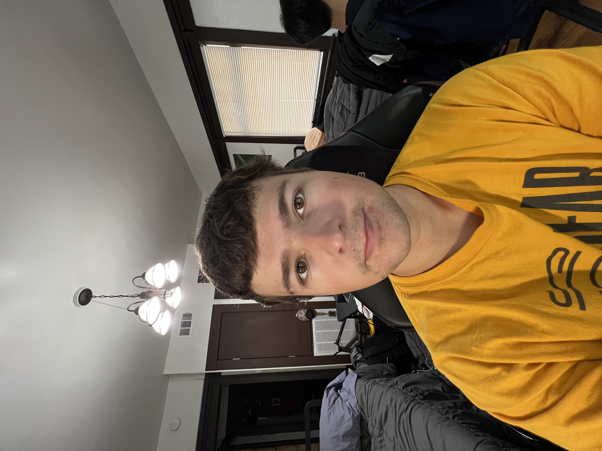
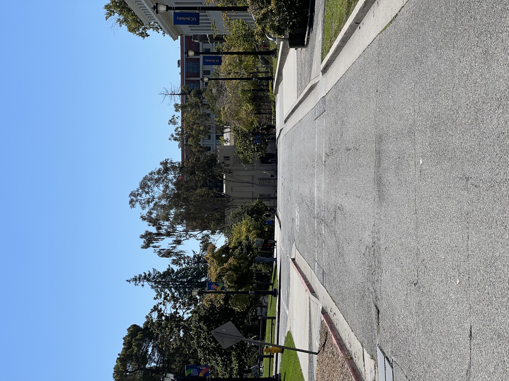
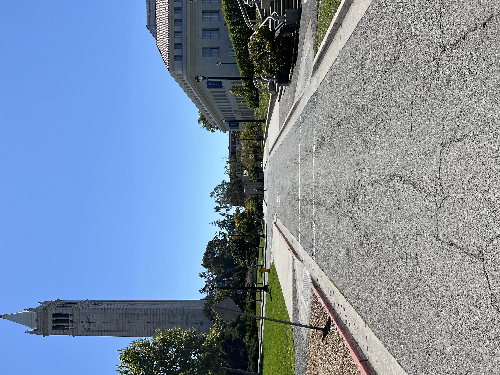
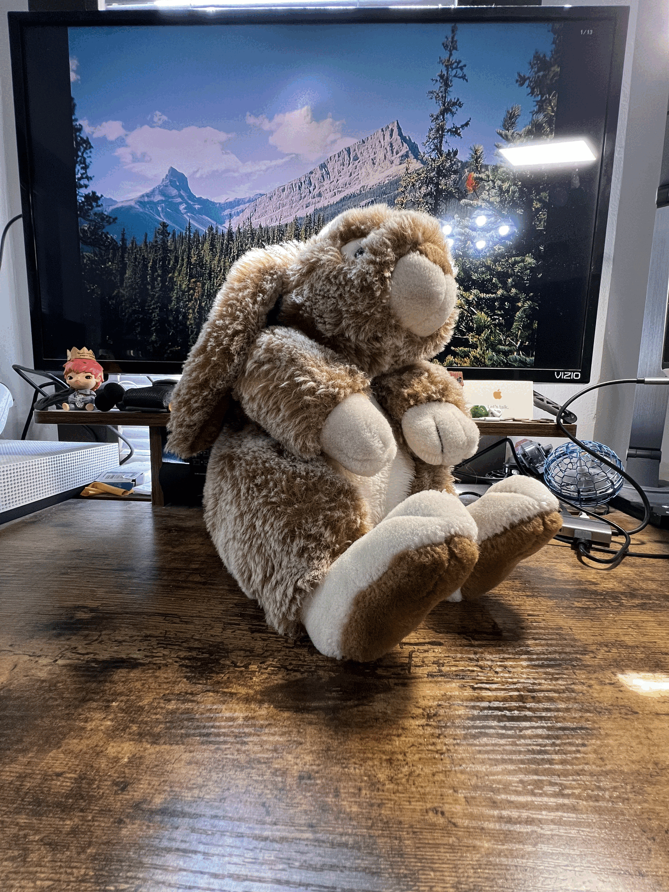

Part 1: Selfie — The Wrong Way vs. The Right Way


Why this happens
Perspective distortion is actually determined by the distance between the camera and subject. In order to achieve the same framing of the subject using wide-angle, you must get closer to the subject. Wide-angle lenses exaggerate features in the foreground, making them appear larger compared to the background. Thus, in my selfie, my face appears rounder and my nose larger. At a longer focal length, the subject must be farther from the camera for proper framing. At greater distance, there is a sense of compression, where distant objects appear closer and the depth of the scene is flattened. This creates a more natural look when compared to the distortion of an up-close, wide-angle photo.
Part 2: Architectural Perspective Compression


Why it looks compressed
The same effect is visible in an urban scene. If you were to draw lines from your eye/lens to a near and far object, the farther you get away, the more parallel those lines become, reducing depth cues and making the objects seem closer together ("flattening" the image). Zoom just crops the field of view, while the distance change alters perspective.
Part 3: The Dolly Zoom (a.k.a. “Vertigo shot”)
